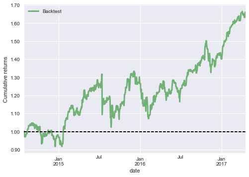
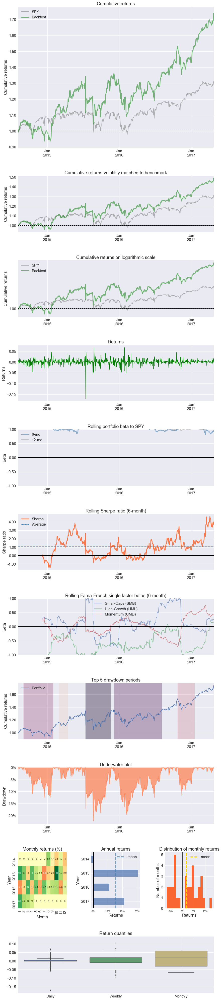

Trading System Tutorial
MarketFlow Running Time: Approximately 1 minute
{kind=link}
A trading system is a set of automated rules for buying and selling stocks, options, futures, and other instruments. Trading is considered to be both an art and a science; the scientific branch is known as technical analysis. Many technicians spend their lives chasing the Holy Grail: a system that will make them rich simply by detecting common patterns. Technicians in history such as Edwards, Elliott, Fibonacci, Gann, and Gartley show us visually appealing charts, but there is no scientific evidence proving that these techniques actually work.
Trading systems generally operate in two contexts: trend and counter-trend. A system that follows the trend tries to stay in one direction as long as possible. A system that bucks the trend reverses direction at certain support and resistance levels, also known as fading the trend. With MarketFlow, you can implement either type of system using our long/short strategy.
In this tutorial, we are going to test a simple long/short system. If today’s closing price is greater than yesterday’s close, then we go long. If today’s close is lower than yesterday’s, then we go short, so we always have a position in the market.
Step 1: From the examples directory, change your directory:
cd "Trading System"
Before running MarketFlow, let’s review the market.yml file
in the config directory. Since we are just running a system,
we really don’t need the model.yml file, but if you have a
project where the system is derived from a model, then you will
want to maintain both files.
In market.yml, we will test our system on five stocks in the
target group faang, going back 1000 trading days. We need
to define only two features: hc for higher close, and lc
for lower close. We name the system closer, which requires
just a longentry and a shortentry. There are no exit
conditions and no holding period, so we will always have a position
in each stock.
market:
create_model : False
data_fractal : 1d
data_history : 500
forecast_period : 1
fractal : 1d
lag_period : 1
leaders : []
predict_history : 50
schema : quandl_wiki
subject : stock
target_group : faang
system:
name : 'closer'
holdperiod : 0
longentry : hc
longexit :
shortentry : lc
shortexit :
scale : False
groups:
faang : ['fb', 'aapl', 'amzn', 'nflx', 'googl']
features : ['hc', 'lc']
aliases:
hc : 'higher_close'
lc : 'lower_close'
Step 2: Now, let’s run MarketFlow:
mflow
As mflow runs, you will see the progress of the workflow,
and the logging output is saved in market_flow.log. When the
workflow completes, your project structure will look like this,
with an additional directory systems:
Trading System
├── market_flow.log
├── config
├── algos.yml
├── market.yml
├── model.yml
└── data
└── input
└── model
└── output
└── plots
└── systems
├── faang_closer_positions_1d.csv
├── faang_closer_returns_1d.csv
├── faang_closer_trades_1d.csv
├── faang_closer_transactions_1d.csv
MarketFlow records position, return, and transaction data in the
systems directory, so now we can analyze our results with
Pyfolio.
Step 3: From the command line, enter:
jupyter notebook
Step 4: Click on the notebook named:
A Trading System.ipynb
You should obtain the following results in your notebook.
{kind=link}